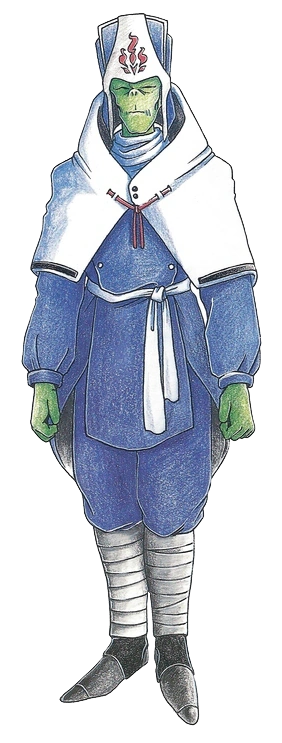

RAJA
(Su Raja)

AMERICAN INSTRUCTION MANUAL BIO
CLASS: Priest
AGE: 85
Raja is a sarcastic old priest who protected the Temple of Ryuon until someone had the nerve to land a large spaceship on it. His healing skills will be handy to have around when the fighting gets intense.
PHANTASY STAR COMPENDIUM BIO
A Dezolian priest who cracks too many cheap jokes. He is highly capable as a disciple, but his personality is his downfall, and he is shuffled off to a temple in a remote part of the land. But this doesn't really bother him. He goes with Rudy (Chaz) and his party, saying only that this "sounds interesting."
TECHNIQUES
- Anti
- Arows
- Res
- Gires
- Rever
- Rimit
- Rimpa
- Sar
- Seals
- Nares
- Gisar
- Regen
- Nasar
SKILLS
- Ataraxia
- Blessing
- Holyword
- Miracle
- St. Fire
COMBOS
- None Available